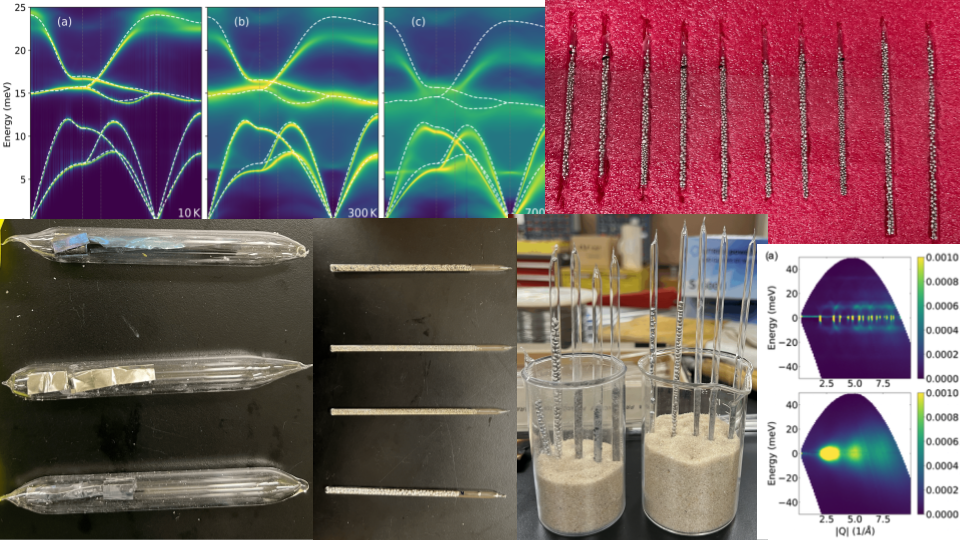
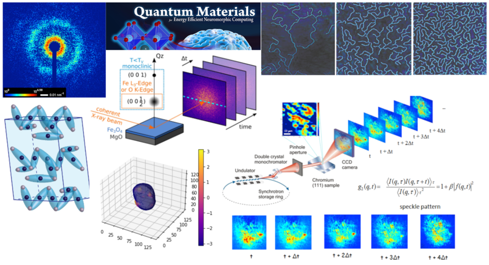
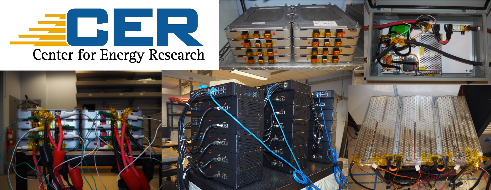

Applied Physics and Materials Science Department - Caltech
I am currently studying the entropy of fusion (melting) for single element metals and alloys using neutron scattering and molecular dynamics (MD) simulations. The entropy of fusion comes from atom vibrations, configurations, and electronic excitations. Inelastic neutron scattering and machine-learned molecular dynamic simulations were used to plot the vibrational entropy of fusion versus the total entropy from the latent heat. The plot showed that Richard’s rule, which states that melting occurs with an entropy of 1.2kB per atom, is correct when there is zero vibrational entropy of melting. Deviations from Richard’s rule are proportional to changes in vibrational entropy during melting plus an additional configurational entropy of ~80% of the vibrational entropy. For the potential energy landscape, this trend suggests a correlation between the change in the number of basins and the change in their inverse curvature during melting.
My next project will involve using Mossbauer spectroscopy and neutron scattering in tandem to investigate LiFeS2 and LiAlFeS2, battery cathode materials. More specifically I will be looking at the polaron hopping using Mossbauer spectroscopy and the diffusion of Li by comparing the quasi elastic peak and the elastic peak obtained through neutron scattering.

Physics Department - UCSD
I have worked on a couple of projects in this lab and described a couple below. One of them being to analyze the metal-insulator transition (MIT) of Magnetite, Fe3O4, and the second one is to visualize a nanometer-scale battery particle, in order to observe dislocations within the particle, given real-space image data using Python. The MIT of magnetite is analyzed by decoupling the electron properties of spin, orbital, lattice structure, and charge. Another being to create a machine learning training data set using CDI data that has been collected by the Shpyrko Research Group. The goal of this project is to create a machine learning algorithm that will be able to characterize signatures from 2D XPCS diffraction images.

Jacobs School of Engineering - NanoEngineering - Mechanical and Aerospace Engineering - UCSD
This lab focuses on energy storage system control, management, integration, and optimization. We utilize a variety of testing equipment such as ones made by Arbin, ITech, and Digatron. I work on designing, implementing, and troubleshooting various battery tests as well as building or installing necessary setups for testing. We preform testing on Tesla and Nissan Leaf electric vehicle batteries, UCAP Power ultracapacitors amongst others. I mainly use MATLAB for test implementation and Python for data analysis.